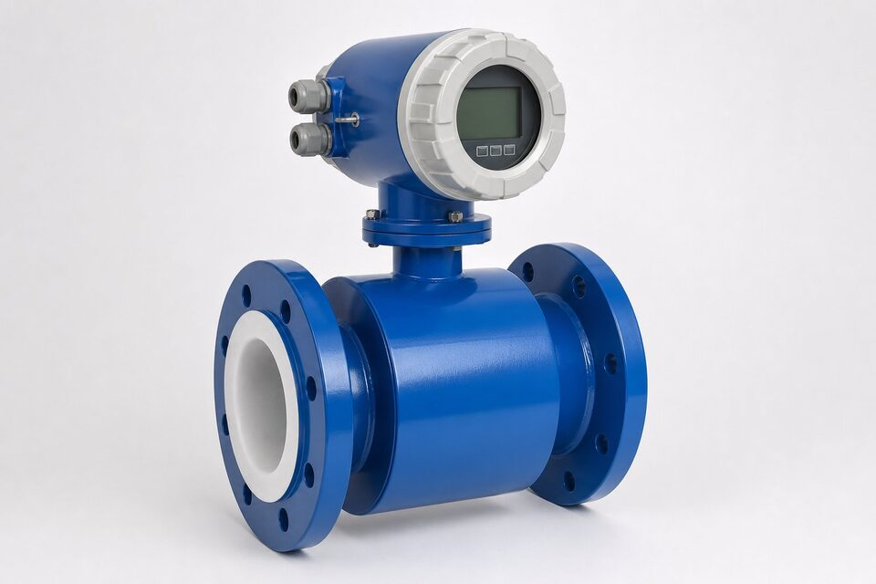

اصل کار؛ قانون فارادی
وقتی یک هادی در میدان مغناطیسی حرکت کند، ولتاژی متناسب با سرعت آن القا میشود. در فلومتر مغناطیسی، سیال رسانا همان هادی است: دو سیمپیچ در طرفین لوله، میدان مغناطیسی ایجاد میکنند و حرکت سیال، ولتاژی عمود بر جریان و میدان القا مینماید که دو الکترود آن را دریافت میکنند. چون ولتای القا شده با سرعت متوسط سیال متناسب است، با داشتن سطح مقطع لوله، دبی حجمی به دست میآید. زیبایی این روش در سادگی آن است: هیچ بخش متحرکی وجود ندارد، هیچ مانعی در مسیر جریان نیست و افت فشار عملاً صفر است.

شرط رسانایی و محدودیتها
مهمترین محدودیت فلومتر مغناطیسی، نیاز به رسانایی سیال است. آبهای شهری، فاضلاب و بیشتر محلولهای آبی این شرط را دارند، اما هیدروکربنهای خالص، روغنها و آبهای فوق خالص رسانایی کافی ندارند و با این فناوری اندازهگیری نمیشوند. حداقل رسانایی موردنیاز بسته به سازنده و طرح متفاوت است و باید در استعلام با سیال واقعی کنترل شود. در سیالهای با رسانایی لب مرز، طرحهای خاص یا فناوریهای جایگزین بررسی میشوند.
لاینر و الکترود
لاینر، پوشش داخلی لوله اندازهگیری است و دو وظیفه دارد: عایق الکتریکی بین سیال و بدنه، و محافظت بدنه در برابر سیال. جنس لاینر باید با دما و شیمی سیال سازگار باشد؛ برای آب و فاضلاب گزینههای لاستیکی رایجاند و برای سیالهای ساینده یا دمای بالا، گزینههای سختتر انتخاب میشوند. الکترودها نیز باید متناسب سیال باشند: در سیالهای خورنده، آلیاژهای خاص لازم است. انتخاب اشتباه لاینر یا الکترود، یکی از رایجترین دلایل خرابی زودرس این فلومترهاست.
نصب و زمینکردن
سه نکته نصب، تفاوت بین خوانش دقیق و خوانش پر از خطا را میسازد. اول، طول مستقیم کافی در بالادست و پاییندست برای شکلگیری پروفایل جریان. دوم، پر بودن کامل لوله اندازهگیری از سیال؛ نصب در نقاطی که احتمال خالی ماندن وجود دارد باید با تمهید ویژه همراه باشد. سوم، زمینکردن صحیح با رینگهای ارت؛ سیگنال اندازهگیری در حد میلیولت است و بدون مرجع پتانسیل پایدار، نویز آن را میپوشاند. این موارد در دستورالعمل نصب هر سازنده با جزئیات آمده و باید رعایت شود.
معیارهای استعلام
در استعلام فلومتر مغناطیسی، سیال دقیق با رسانایی تقریبی، دمای کاری، رنج دبی، سایز خط، جنس لوله موجود و شرایط زمینکردن را ذکر کنید. انتخاب لاینر و الکترود را بر اساس سیال نهایی کنید و در صورت نیاز، نسخه یکتکه یا دوتکه (ترانسمیتر جدا) را مشخص نمایید. خروجی و پروتکل ارتباطی و الزامات ناحیه خطر نیز از پارامترهای ضروری است. مدارک کالیبراسیون کارخانهای همراه تجهیز تحویل میشود.
جمعبندی
فلومتر مغناطیسی به دلایل خوبی انتخاب اول آب و فاضلاب است: بدون بخش متحرک، بدون افت فشار و با نگهداری اندک. با رعایت شرط رسانایی، انتخاب درست لاینر و الکترود و نصب اصولی با زمینکردن صحیح، این تجهیز سالها اندازهگیری دقیق و پایدار ارائه میدهد.
سوالات رایج
فلومتر مغناطیسی چگونه کار میکند؟
بر اساس قانون فارادی: سیال رسانا در میدان مغناطیسی حرکت کرده و ولتاژی متناسب با سرعت متوسط تولید میکند؛ این ولتاژ توسط دو الکترود دریافت و به دبی تبدیل میشود.
شرط اصلی کارکرد چیست؟
سیال باید رسانا باشد؛ حداقل رسانایی موردنیاز بسته به سازنده متفاوت است اما معمولاً در حد چند میکروزیمنس است. هیدروکربنها و آبهای فوق خالص با این فناوری اندازهگیری نمیشوند.
لاینر چیست و چرا مهم است؟
پوشش داخلی لوله اندازهگیری که از تماس سیال با بدنه فلزی جلوگیری میکند و عایق الکتریکی است. جنس آن باید با سیال سازگار باشد؛ انتخاب اشتباه لاینر به تورم، سایش یا خوردگی منجر میشود.
چرا زمینکردن (ارتینگ) اهمیت دارد؟
سیگنال اندازهگیری بسیار کوچک است و پتانسیل مرجع پایدار میخواهد؛ بدون زمینکردن صحیح، نویز و پتانسیلهای سرگردان، خوانش را خطا میاندازند. رینگهای ارت در نصب الزامیاند.
مطالب مرتبط
با ذکر سیال، رنج دبی، سایز خط و شرایط نصب، فلومتر مغناطیسی متناسب از برندهای معتبر عرضه میشود.
مشاهده صفحه محصول ← ثبت RFQ همین محصولتامین این تجهیزات را به پیشرو تجهیز فرتاک بسپارید
شرکت پیشرو تجهیز فرتاک تامینکننده تخصصی تجهیزات صنعتی برای پروژههای نفت، گاز، پتروشیمی، فولاد و نیروگاهی است. برای دریافت پیشنهاد فنی و قیمت، استعلام (RFQ) خود را ثبت کنید تا کارشناسان مهندسی فروش در کوتاهترین زمان پاسخ دهند.
- تامین ابزار دقیقترانسمیترها و آنالایزرهای برندهای معتبر
- تامین تجهیزات صنایع نفت و گازپکیج مواد مطابق وندورلیست